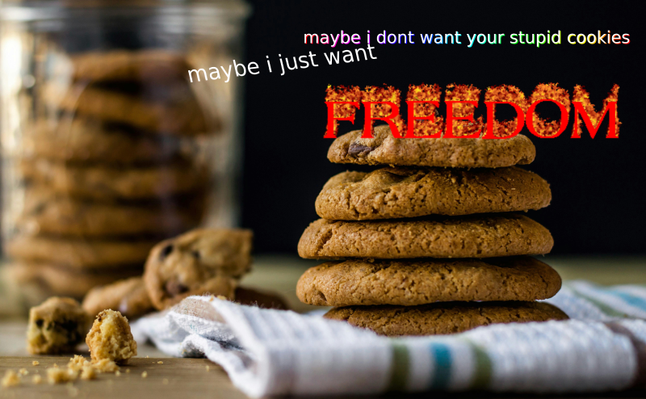
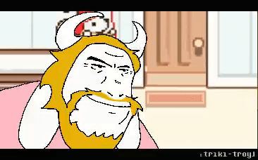

hi heres my super cool webpage where im definitely using all of my skills in the best way they can be used
i dont know what im doing with this page yet so wheee
Nothing better to do here so I'm going to ramble about Deltarune theories
Disclaimer: I am a Dess Knight truther currently. Definitely a Holiday family conspiracy truther.
The Black Knife is made of obsidian in the Light World. How do I know this? The Black Shard, which is a piece of the Black Knife, reveals
very interesting details in the Light World. It's hard, black, nearly opaque glass. These are traits of common obsidian.
I've heard the argument that because obsidian chips easily it can't be the Black Knife. Except it did chip. It's still hard, but it did and can chip. And also, Kris's sword is a pencil and that didn't snap so
the traits might be different between worlds.
The average knife is a 5-5.5 on the Mohs hardness scale.
Obsidian is also a 5-5.5 on the Mohs hardness scale. Knife hardness. And obsidian has been used to make knives and blades.
In fact, chipping obsidian is used by survivalists to make tools, especially knives. So the chippability of obsidian lends even more likelihood to the Black Knife being an obsidian knife in the Light World. Obsidian blades are used by doctors sometimes but no one in the Holiday family is a doctor
so its unlikely its a medical one. The Black Knife is likely an obsidian knife in the Light World. Which is a real weapon
and would explain why it does so much damage. Even the Black Shard, which is just a piece of the Black Knife, is extremely sharp and can do a lot of damage.
Just like chipped obsidian.
Obsidian knife theory is separate from Dess Knight theory. I did not make the obsidian theory with the intent
of supporting Dess Knight, just to maybe find more details and truths. But it does support Dess Knight. Why? Because if you check in Dess's room you
can find rusted knives, army rations, and other survivalist stuff. She would know how to make a knife out of flint or obsidian. By chipping it.
She probably practiced. She probably made an obsidian blade, a Black Knife. This can also support Carol Knight, as maybe Carol
took this obsidian knife from Dess's room but its more unlikely. Dess would (based on what we know) make an obsidian knife and use it, and probably be really proud of it.
It's a survivialist thing. And she was a survivialist. Dess is probably the Roaring Knight. The evidence is very strong at the moment especially
when obsidian knife theory (which is speculative and a theory but due to the evidence is extremely likely) is brought into play.
okay im done rambling.